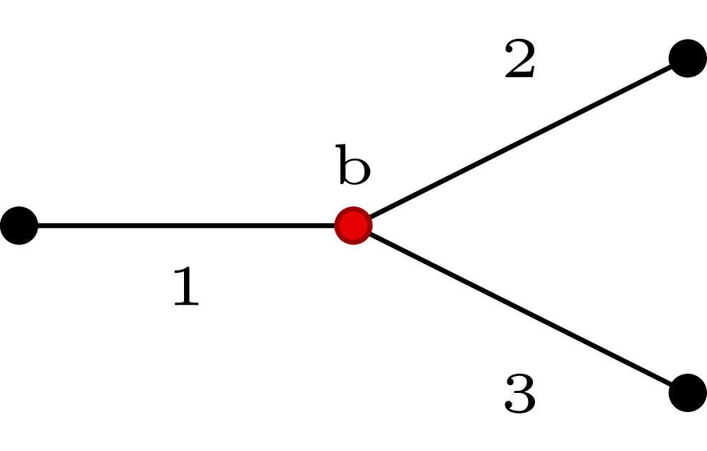

bifurcations.jl |
|||||||||||||||||||||||
|---|---|---|---|---|---|---|---|---|---|---|---|---|---|---|---|---|---|---|---|---|---|---|---|
|

In a bifurcation, there is a The bifurcation is solved by imposing the conservation of mass and of static pressure at the bifurcation node \(b\). Three additional relations are obtained by extrapolating the three outgoing characteristics. The solution process is the same described for the conjunction case. \(U\) and \(F\) vectors read \[
U = \{U_i\} = \left\{ \begin{array}{c}
u_1 \\
u_2 \\
u_3 \\
A_1^{1/4} \\
A_2^{1/4} \\
A_3^{1/4}
\end{array} \right\} , \quad i =1, ..., 6,
\] \[
F = \left\{f_i \right\} =
\begin{cases}
U_1 + 4k_1U_4 - W_1^* = 0, \\
U_2 - 4k_2U_5 - W_2^* = 0, \\
U_3 - 4k_3U_6 - W_3^* = 0, \\
U_1U_4^4 - U_2U_5^4 - U_3U_6^4 = 0, \\
\beta_1 \left(\tfrac{U_4^2}{A_{01}^{1/2}} -1 \right) -
\beta_2 \left(\tfrac{U_5^2}{A_{02}^{1/2}} -1 \right) = 0, \\
\beta_1 \left(\tfrac{U_4^2}{A_{01}^{1/2}} -1 \right) -
\beta_3 \left(\tfrac{U_6^2}{A_{03}^{1/2}} -1 \right) = 0, \\
\end{cases}
\] and the Jacobian reads \[
J = \left[ \begin{array}{cccccc}
1 & 0 & 0 & 4k_1 & 0 & 0 \\
0 & 1 & 0 & 0 & -4k_2 & 0 \\
0 & 0 & 1 & 0 & 0 & -4k_3 \\
U_4^4 & -U_5^4 & -U_6^4 & 4U_1 U_4^3 & -4 U_2 U_5^3 & -4U_3 U_6^3 \\
0 & 0 & 0 & 2\beta_1 U_4/A_{01}^{1/2} &
-2\beta_2 U_5/A_{02}^{1/2} & 0 \\
0 & 0 & 0 & 2\beta_1 U_4/A_{01}^{1/2} &
-2\beta_2 U_5/A_{02}^{1/2} & 0 \\
\end{array} \right].
\] The solution is performed by |
|
||||||||||||||||||||||
|
function
|
function solveBifurcation(v1 :: Vessel, v2 :: Vessel, v3 :: Vessel)
#Unknowns vector
U = [v1.u[end],
v2.u[ 1 ],
v3.u[ 1 ],
sqrt(sqrt(v1.A[end])),
sqrt(sqrt(v2.A[ 1 ])),
sqrt(sqrt(v3.A[ 1 ]))]
#Parameters vector
k1 = sqrt(0.5*3*v1.gamma[end])
k2 = sqrt(0.5*3*v2.gamma[ 1 ])
k3 = sqrt(0.5*3*v3.gamma[ 1 ])
k = [k1, k2, k3]
W = calculateWstarBif(U, k)
J = calculateJacobianBif(v1, v2, v3, U, k)
F = calculateFofUBif(v1, v2, v3, U, k, W)
#Newton-Raphson
nr_toll_U = 1e-5
nr_toll_F = 1e-5
while true
dU = J\(-F)
|
||||||||||||||||||||||
|
U_new = U + 0.01*dU |
U_new = U + dU
if any(isnan(dot(F,F)))
println(F)
@printf "error at bifurcation with vessels %s, %s, and %s \n" v1.label v2.label v3.label
break
end
u_ok = 0
f_ok = 0
for i in 1:length(dU)
if abs(dU[i]) <= nr_toll_U || abs(F[i]) <= nr_toll_F
u_ok += 1
f_ok += 1
end
end
if u_ok == length(dU) || f_ok == length(dU)
U = U_new
break
else
U = U_new
W = calculateWstarBif(U, k)
F = calculateFofUBif(v1, v2, v3, U, k, W)
end
end
#Update vessel quantities
v1.u[end] = U[1]
v2.u[ 1 ] = U[2]
v3.u[ 1 ] = U[3]
v1.A[end] = U[4]*U[4]*U[4]*U[4]
v2.A[ 1 ] = U[5]*U[5]*U[5]*U[5]
v3.A[ 1 ] = U[6]*U[6]*U[6]*U[6]
v1.Q[end] = v1.u[end]*v1.A[end]
v2.Q[ 1 ] = v2.u[ 1 ]*v2.A[ 1 ]
v3.Q[ 1 ] = v3.u[ 1 ]*v3.A[ 1 ]
v1.P[end] = pressure(v1.A[end], v1.A0[end], v1.beta[end], v1.Pext)
v2.P[ 1 ] = pressure(v2.A[ 1 ], v2.A0[ 1 ], v2.beta[ 1 ], v2.Pext)
v3.P[ 1 ] = pressure(v3.A[ 1 ], v3.A0[ 1 ], v3.beta[ 1 ], v3.Pext)
v1.c[end] = waveSpeed(v1.A[end], v1.gamma[end])
v2.c[ 1 ] = waveSpeed(v2.A[ 1 ], v2.gamma[ 1 ])
v3.c[ 1 ] = waveSpeed(v3.A[ 1 ], v3.gamma[ 1 ])
end
|
||||||||||||||||||||||
|
function
|
function calculateWstarBif(U :: Array, k :: Array)
W1 = U[1] + 4*k[1]*U[4]
W2 = U[2] - 4*k[2]*U[5]
W3 = U[3] - 4*k[3]*U[6]
return [W1, W2, W3]
end
|
||||||||||||||||||||||
|
function
Total pressure conservation can be imposed by replacing respectively.
|
function calculateFofUBif(v1 :: Vessel, v2 :: Vessel, v3 :: Vessel,
U :: Array, k :: Array, W :: Array)
f1 = U[1] + 4*k[1]*U[4] - W[1]
f2 = U[2] - 4*k[2]*U[5] - W[2]
f3 = U[3] - 4*k[3]*U[6] - W[3]
f4 = U[1]*(U[4]*U[4]*U[4]*U[4]) - U[2]*(U[5]*U[5]*U[5]*U[5]) - U[3]*(U[6]*U[6]*U[6]*U[6])
f5 = v1.beta[end]*(U[4]*U[4]/sqrt(v1.A0[end]) - 1 ) -
( v2.beta[ 1 ]*(U[5]*U[5]/sqrt(v2.A0[1]) - 1) )
f6 = v1.beta[end]*(U[4]*U[4]/sqrt(v1.A0[end]) - 1 ) -
( v3.beta[ 1 ]*(U[6]*U[6]/sqrt(v3.A0[1]) - 1) )
return [f1, f2, f3, f4, f5, f6]
end
|
||||||||||||||||||||||
|
function
The conservation of total pressure is imposed by setting the following elements different than zero:
|
function calculateJacobianBif(v1 :: Vessel, v2 :: Vessel, v3 :: Vessel,
U :: Array, k :: Array)
J = eye(6)
J[1,4] = 4*k[1]
J[2,5] = -4*k[2]
J[3,6] = -4*k[3]
J[4,1] = (U[4]*U[4]*U[4]*U[4])
J[4,2] = -(U[5]*U[5]*U[5]*U[5])
J[4,3] = -(U[6]*U[6]*U[6]*U[6])
J[4,4] = 4*U[1]*(U[4]*U[4]*U[4])
J[4,5] = -4*U[2]*(U[5]*U[5]*U[5])
J[4,6] = -4*U[3]*(U[6]*U[6]*U[6])
J[5,1] = 0.
J[5,2] = 0.
J[5,4] = 2*v1.beta[end]*U[4]/sqrt(v1.A0[end])
J[5,5] = -2*v2.beta[ 1 ]*U[5]/sqrt(v2.A0[1])
J[6,1] = 0.
J[6,3] = 0.
J[6,4] = 2*v1.beta[end]*U[4]/sqrt(v1.A0[end])
J[6,6] = -2*v3.beta[ 1 ]*U[6]/sqrt(v3.A0[1])
return J
end
|